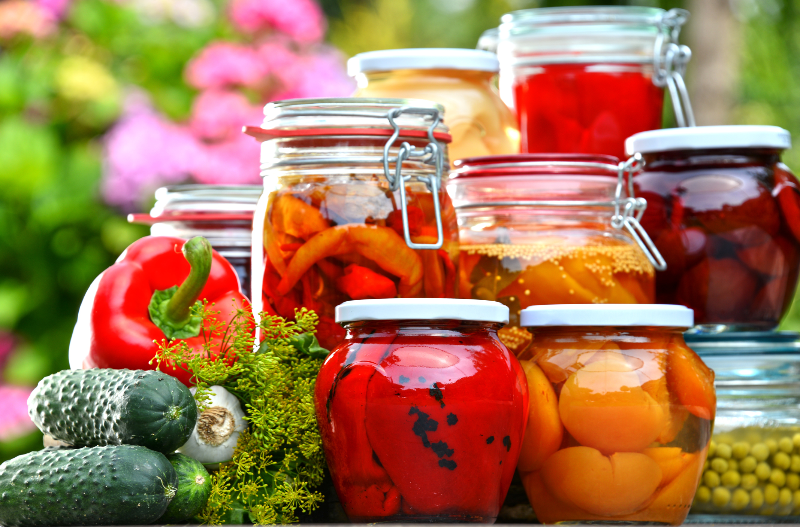

Our products are known throughout the world, but why not try them where they became famous?
Local Restaurants Feautring our Peppers
- Alinea
- The Purple Pig
- Au Cheval
- Longman & Eagle
- Lula Cafe
- Girl and the Goat
- Spiaggia
- Blackbird
- Grace
In addition to the above restaurants, our peppers can be found in grocery stores throught the country. If they don't carry them, ask your local grocer to start!
As always, our fresh peppers are available during the summer and fall months and our pickled peppers are available anytime during the year. Check out our contact page on how to find us!